Je t'ai preparé un petit recap de la v1 du systeme d'engagement LinkedIn.
Le but c'est que tu comprennes comment j'ai imaginé le systeme et comment on pourrait l'améliorer apres avec tes idées.
C'est un systeme qui like et commente automatiquement les posts de créateurs LinkedIn que tu suis. Le tout depuis le compte de Baptiste.
L'idée c'est simple : au lieu de passer 1h par jour à scroller LinkedIn, liker et commenter à la main, le systeme le fait pour toi. Et les commentaires sont écrits par Claude (l'IA d'Anthropic), donc ils sont pertinents et contextuels.
Tout est orchestré par n8n (un outil d'automatisation) et tout part de Notion.
Le systeme utilise 2 tables Notion. C'est ton centre de controle.
La liste des créateurs LinkedIn qu'on surveille. Chaque profil a :
Chaque like/commentaire qu'on fait est enregistré ici :
Actuellement 50 profils actifs sont surveillés. Tous en mode Manuel pour le moment.
Ouvrir dans Notion ↗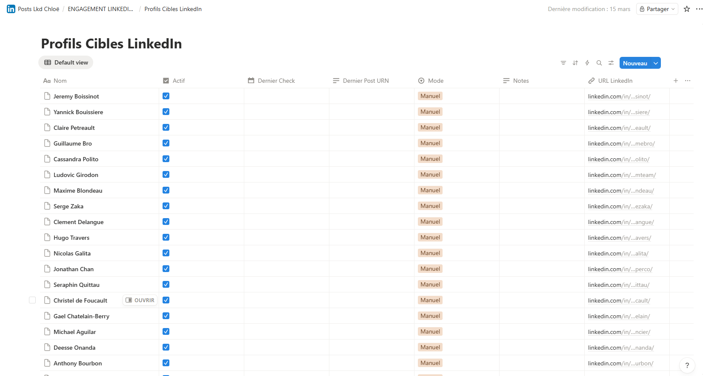
Ce que tu vois : Jeremy Boissinot, Yannick Bouissiere, Claire Petreault, Guillaume Bro, Cassandra Polito, Hugo Travers, Serge Zaka, etc. Tous cochés "Actif", tous en mode "Manuel". Tu peux ajouter ou retirer des profils quand tu veux directement dans Notion.
C'est ici que chaque interaction est tracée. Voici le résultat apres notre test d'aujourd'hui :
Ouvrir dans Notion ↗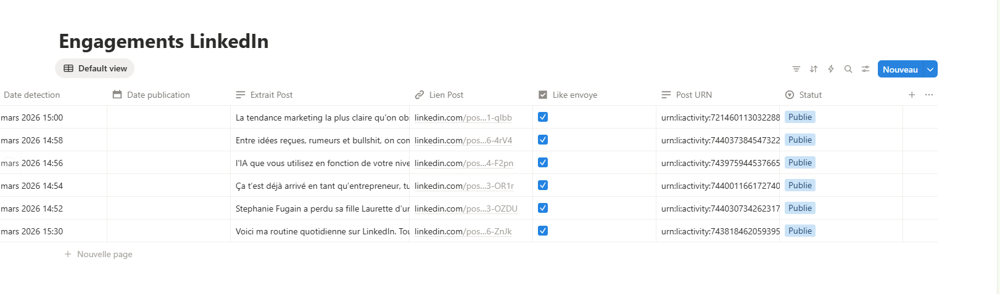
6
posts likés
6
commentaires générés
6
publiés sur LinkedIn
Le workflow fait tout dans l'ordre. Voici la vue complète dans n8n :
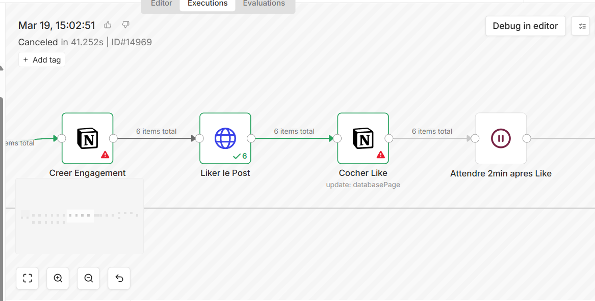
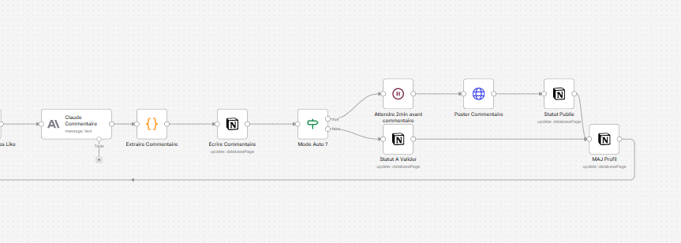
Trigger Manuel → Mon ID LinkedIn → Lire Profils Actifs → Extraire Profils → Apify Scraper → Filtrer Nouveaux Posts → Creer Engagement → Liker le Post → Cocher Like → Attendre 2min → Claude Commentaire → Extraire Commentaire → Ecrire Commentaire → Mode Auto ? → Statut A Valider / Poster Commentaire → MAJ Profil → Post suivant
Le workflow commence par lire la table Profils Cibles dans Notion. Il récupere tous les profils ou la case "Actif" est cochée.
Pour notre test, il a trouvé 50 profils actifs. Pour chacun, il récupere le nom, l'URL LinkedIn, le mode (Manuel/Auto), et le dernier post déja vu.
Exemple : Harold Gardas
URL : linkedin.com/in/harold-gardas/
Mode : Manuel
Actif : true
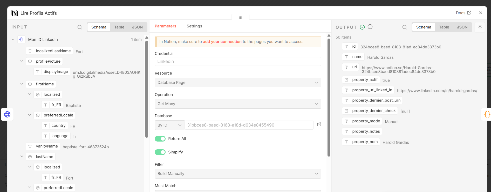
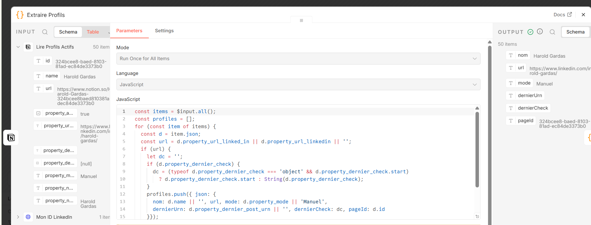
Un petit bout de code prend les 50 profils et les prépare pour l'étape suivante. Il crée une liste d'URLs LinkedIn et une "map" pour pouvoir retrouver facilement quel profil correspond a quel post.
C'est aussi ici qu'on gere le format des dates Notion (qui est un peu spécial) pour éviter les bugs.
Apify est un service qui va scraper LinkedIn pour nous. On lui envoie la liste des 50 URLs et il nous retourne le dernier post de chaque profil.
Pour notre test, il a trouvé 41 posts (certains profils n'avaient pas de post récent).
Pour chaque post, Apify retourne :
- Le texte du post
- L'URL du post
- Le nom de l'auteur
- La date de publication
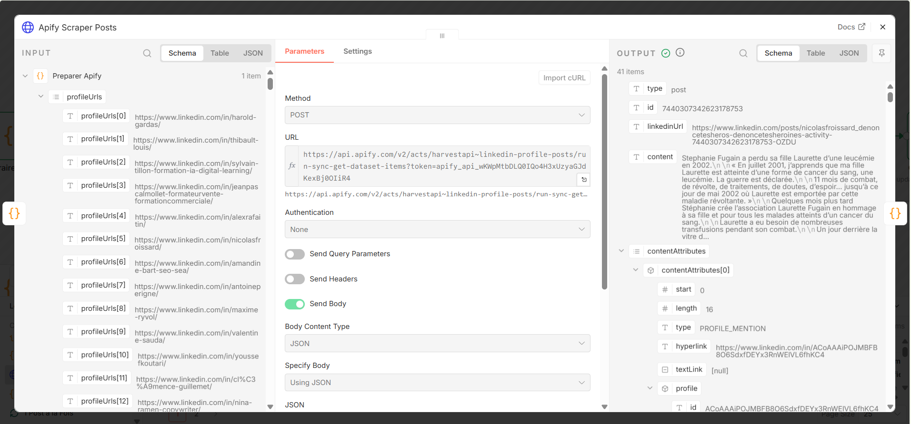
C'est l'étape la plus importante. Le systeme vérifie pour chaque post :
Déja liké ?
Si le "Dernier Post URN" du profil est le meme que le post trouvé → on skip
Trop ancien ?
Si le post date d'avant le dernier check du profil → on skip
Doublon ?
1 seul post par profil par cycle, pas de duplicata
→ Résultat : si tu relances le workflow, il ne likera jamais deux fois le meme post.
Le systeme crée une nouvelle ligne dans la table Engagements de Notion avec le nom de l'auteur, l'extrait du post, le lien, la date, et le statut "Nouveau".
Un appel a l'API LinkedIn pour liker le post depuis le compte de Baptiste. Puis il coche "Like envoyé" dans Notion.
✓ 6 posts likés pendant notre test : Nicolas Froissard, Harold Gardas, Thibault Louis, Amandine Bart, Maxime Ryvol, Antoine Périgne
Apres chaque like, le systeme attend 2 minutes avant de générer le commentaire.
Pourquoi ? Pour simuler un comportement humain. Si on like et commente 50 posts en 10 secondes, LinkedIn va detecter que c'est un bot et bloquer le compte. 2 minutes entre chaque action, ca reste naturel.
0 sec
Robot détecté
2 min
Naturel
5 min
Trop long
Le systeme envoie le texte du post a Claude (l'IA) avec ces instructions :
// Prompt envoyé a Claude :
Génere UN SEUL commentaire court (2-4 phrases max).
Pertinent par rapport au contenu.
Professionnel mais naturel.
Sans emoji excessifs (1 max).
Sans hashtags.
Sans formules génériques ("Super post", "Merci pour ce partage").
Varie le style : question, retour d'expérience, complément d'info.
Exemple réel de notre test :
Post de Thibault Louis : "l'IA que vous utilisez en fonction de votre niveau : Niveau 1 : ChatGPT, Niveau 4 : Claude, Niveau 5 : Eustache la pistache"
"Curieux de savoir ce qui justifie ce classement - Claude au niveau 4 pour quelle raison précise, la qualité du raisonnement ou autre chose ?"
Le commentaire généré par Claude est sauvegardé dans la colonne "Commentaire" de la table Engagements dans Notion.
A ce stade, le commentaire n'est pas encore posté sur LinkedIn. Il est juste stocké. C'est ca qui te permet de le relire et de le modifier si besoin avant de le publier.
C'est le mode actuel pour tous les profils.
Pour les profils ou tu fais confiance a Claude.
Pour changer : va dans la table Profils Cibles dans Notion et change la colonne "Mode" de "Manuel" a "Auto" pour les profils que tu veux.
Quand le workflow tourne en mode Manuel, les commentaires sont stockés avec le statut "A valider". Ton job c'est d'aller dans Notion, relire le commentaire, et changer le statut.
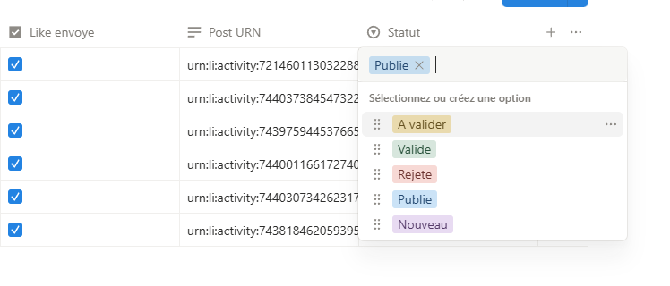
Nouveau
Vient d'etre créé
A valider
En attente de toi
Validé
Pret a poster
Publié
Posté sur LinkedIn
Rejeté
On le poste pas
Quand tu relances le workflow, la Branche 2 va lire la table Engagements et chercher tous les commentaires avec le statut "Validé".
Pour notre test, on avait mis 5 commentaires en "Validé". Le systeme les a tous trouvés et traités.
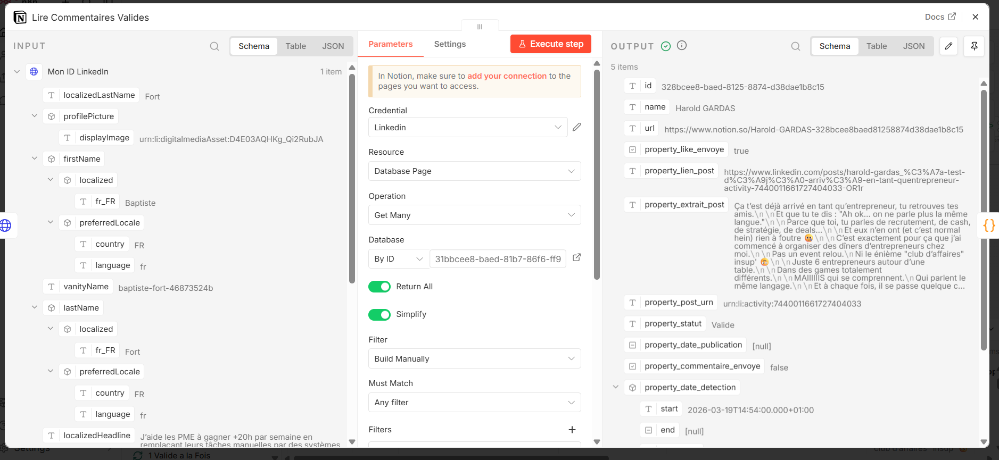
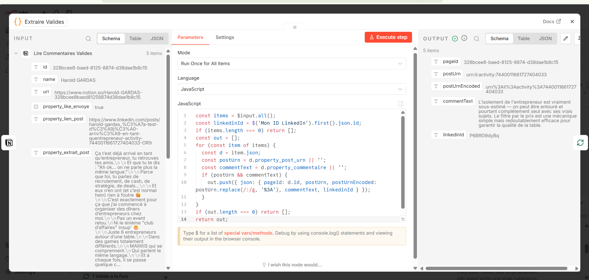
Le code extrait le Post URN et le texte du commentaire
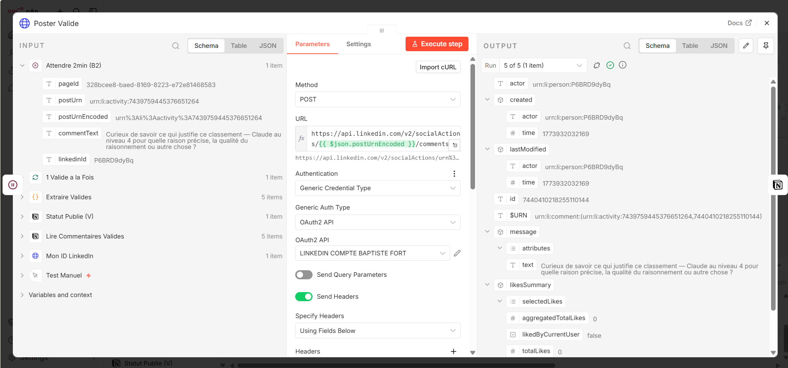
Appel API LinkedIn pour poster le commentaire
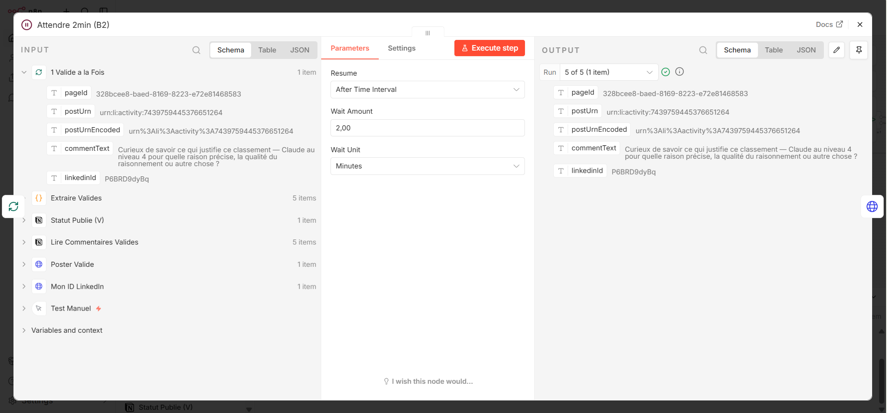
2 minutes d'attente entre chaque commentaire (toujours pour rester naturel)
Voici les commentaires postés automatiquement depuis le compte de Baptiste :
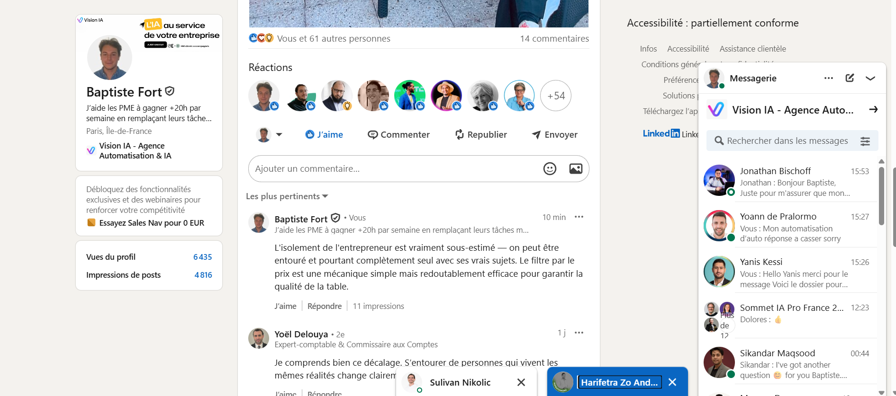
Commentaire sur le post de Nicolas Froissard (Laurette Fugain)
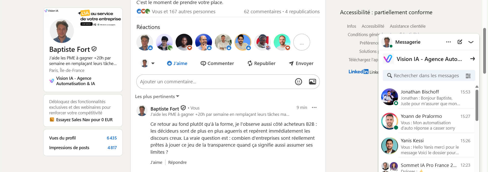
Commentaire sur le post de Maxime Ryvol (marketing)
Ca marche. Les commentaires sont visibles et pertinents. On peut encore améliorer le prompt Claude pour que ca fasse moins "IA" et plus naturel, mais la base est la.
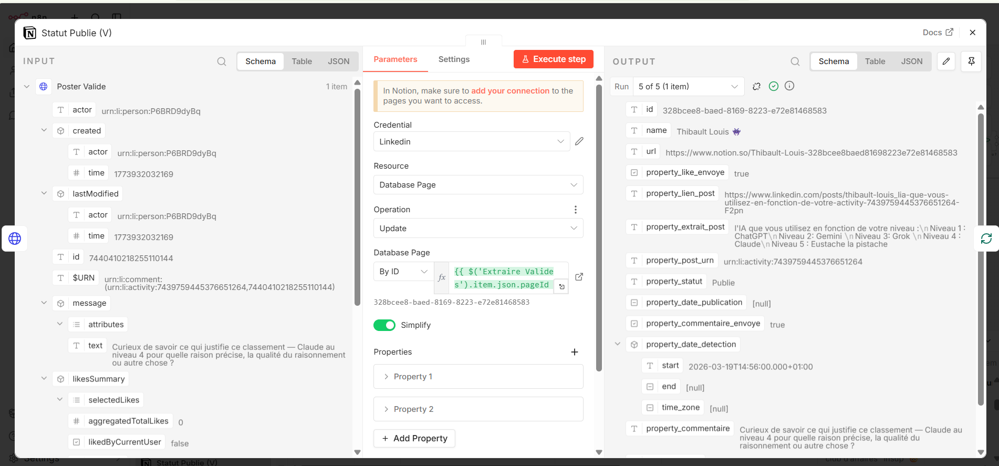
Une fois le commentaire posté sur LinkedIn, le systeme met a jour la ligne dans Notion :
Comme ca tu sais toujours ou on en est dans Notion.
Le systeme scanne les 50 profils, détecte les nouveaux posts, like et génere les commentaires. Tu n'as rien a faire a cette étape.
Tu vas dans la table Engagements. Tu vois les nouveaux commentaires en statut "A valider". Tu les relis, tu modifies si besoin, tu passes en "Validé".
A la prochaine exécution, la Branche 2 détecte les commentaires "Validé" et les poste sur LinkedIn. C'est fait.
Entre le like et le commentaire, et entre chaque post. Ca simule un humain qui lit, réfléchit, puis commente.
Meme si un profil a posté 5 fois cette semaine, on ne like que le dernier post. Pas de spam.
Le systeme note le dernier post vu pour chaque profil. Si tu relances, il ne re-like jamais le meme post.
Claude génere des commentaires variés, sans formules répétitives, sans hashtags. Impossible a distinguer d'un vrai commentaire.
Notion
Base de données
n8n
Automatisation
Claude
IA commentaires
LinkedIn API
Like + Comment
Apify
Scraping des derniers posts LinkedIn (50 profils en ~30 sec)
50
profils surveillés
41
posts détectés
6
likes + commentaires
~38s
scan des 50 profils
Pour le moment le workflow se lance manuellement. L'étape suivante c'est d'ajouter un déclencheur automatique (CRON) pour qu'il tourne tout seul.
Proposition : 9h et 15h, du lundi au vendredi
Expression CRON : 0 9,15 * * 1-5
Ca fait 2 scans par jour. Assez pour rester actif sans etre intrusif.
Une fois que tu es a l'aise avec la qualité des commentaires de Claude, tu pourras passer certains profils en mode "Auto". Les commentaires seront postés directement sans validation.
Je te conseille de commencer par 5-10 profils ou les sujets sont toujours dans la meme thématique (marketing, SEO, etc.). Comme ca Claude a plus de chances de générer un commentaire pertinent.
On peut enrichir les instructions données a Claude pour que les commentaires soient encore plus dans le ton de Baptiste. Par exemple :
Max 8 likes et 5 commentaires par jour pour encore plus de sécurité.
Au lieu de 2 min fixes, entre 1 et 4 min aléatoirement. Plus naturel.
Recevoir un résumé par email ou Slack apres chaque cycle.
Compter combien de likes/commentaires par semaine, par profil, etc.
Ne commenter que les posts qui parlent de certains sujets (management, IA, etc.).
On a une liste de 180 créateurs. On peut en activer plus progressivement.
Voila le recap de la v1. Le systeme fonctionne, les likes et commentaires sont postés correctement, et tout est tracé dans Notion.
Dis-moi ce que tu en penses, ce que tu voudrais changer, et on itere ensemble.